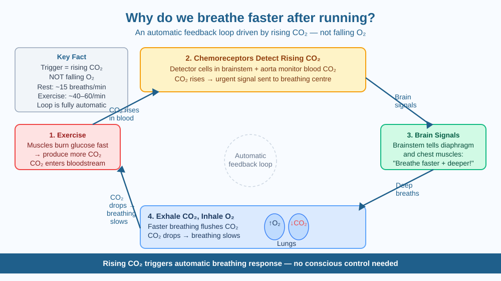

By the end of this lesson, you should be able to explain the feedback loop that controls breathing rate during exercise, identify what chemical triggers it, and predict what happens if breathing is deliberately held after sprinting.
You cross the finish line of a 400-metre race and your lungs immediately feel like they are working overtime. You breathe fast and deep for several minutes even after you have stopped running completely. Your muscles have slowed down — so why is your body still demanding so much air?
The answer begins inside your muscles.
Why muscles need oxygen during exercise: Your muscles run on energy. To release that energy from glucose (a sugar carried in your blood), cells use oxygen in a process called cellular respiration. The products are: energy (used immediately for movement), water, and carbon dioxide (CO₂). At rest, this process runs slowly and steadily.
What changes when you run: When you sprint, muscles contract powerfully and repeatedly. They need to release energy much faster. So they burn far more glucose, consume far more oxygen, and produce far more CO₂. This CO₂ enters the bloodstream.
How the body detects the change: When CO₂ dissolves in blood, it makes the blood slightly more acidic. Your body has specialised detector cells called chemoreceptors — located in the brainstem and in the walls of the aorta (the large artery near the heart) — that constantly monitor the CO₂ level and acidity of the blood. The moment CO₂ rises above the normal range, these receptors send urgent signals to the breathing centre in the brainstem.
The automatic response: The breathing centre sends motor signals to the diaphragm (the dome-shaped muscle below the lungs) and the intercostal muscles (the muscles between your ribs): "Contract faster and deeper!" This is what you feel as rapid, deep breathing after exercise.
Why it works: Faster and deeper breaths bring in more fresh oxygen and — crucially — push out the excess CO₂ through the lungs. As CO₂ is expelled, the acidity of the blood returns to normal. The chemoreceptors detect this and the breathing rate gradually slows back down.
The key fact: The main trigger for faster breathing is rising CO₂ — not falling oxygen. Even if your oxygen level is completely normal, high CO₂ alone will make you breathe faster. This is why holding your breath feels almost immediately uncomfortable: CO₂ builds up within seconds and the urge to breathe becomes nearly impossible to ignore.
This is a classic feedback loop — a system that detects a change and automatically corrects it:
Exercise → Muscles produce more CO₂ → CO₂ rises in blood → Chemoreceptors detect the rise → Brain signals "breathe faster and deeper" → Faster breathing expels CO₂ → Blood CO₂ returns to normal → Breathing rate slows
The loop is completely automatic — you do not consciously decide to breathe faster. Your brainstem handles it without your awareness.
At rest: ~15 breaths per minute. During intense exercise: ~40–60 breaths per minute, each much deeper.
The included SVG shows the breathing feedback loop as a four-node cycle:

A free diver (someone who dives underwater without oxygen tanks) can extend breath-holding by hyperventilating — breathing very rapidly before diving. This flushes excess CO₂ out of the blood before the dive begins.
Because chemoreceptors respond to CO₂ and not to falling oxygen, the diver feels no urge to breathe even as oxygen is actually running dangerously low in the tissues. Oxygen can drop to levels that cause unconsciousness with no warning at all. Many free-diving deaths happen exactly this way.
Predict: Hyperventilating reduces the urge to breathe underwater — but does it actually give the diver more oxygen to use? Why or why not?
What is the main reason we breathe faster after running?
Why is knowing the mechanism of increased breathing rate more useful than memorising that we breathe faster?
If a person held their breath after sprinting, what would you predict would happen?
After your next run or any intense physical exercise, count your breathing rate every 30 seconds for 5 minutes and write each measurement down. Plot the numbers on a simple graph. Identify the point where CO₂ was probably highest and the point where it returned to near-normal, based on the graph shape.
Your body responds to rising CO₂ far more urgently than to falling oxygen. You can tolerate low oxygen for several minutes without much distress — but even a modest rise in CO₂ becomes uncomfortable within seconds. The sensation of "I cannot breathe" during exercise is driven almost entirely by the CO₂ signal, not by a lack of oxygen. This is why the urge to breathe during breath-holding feels so urgent even when there is still plenty of oxygen left.
Breathing rate after exercise is controlled by an automatic feedback loop: rising CO₂ (not falling O₂) triggers chemoreceptors, which signal the diaphragm to breathe faster and deeper until CO₂ is expelled and the blood returns to its normal balance.